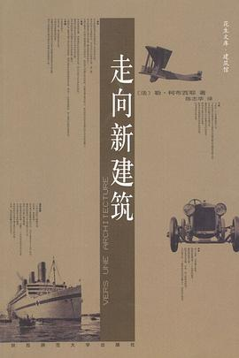

《走向新建筑》

总体观点
二十世纪现代主义建筑泰斗勒·柯布西耶（Le Corbusier）引爆全球现代建筑运动的纲领性宣言。全书以充满诗意、战斗性与时代激情的文字，彻底埋葬了十九世纪巴黎美术学院派僵死的折衷主义仿古陈规。
核心论点：大工业时代已经呼啸而来，工程师的美学与现代机器生产正在重新塑造世界；建筑师必须睁开‘视而未见的双眼’，向远洋客轮、飞机与汽车学习纯粹几何形体与功能适应性。‘房屋是居住的机器’，现代建筑必须以工业化批量生产解决全人类的居住危机。
作者首次系统提出了新建筑的纯粹几何法则与‘基准线’秩序，并振聋发聩地向欧洲各国统治阶层发出‘建筑或革命’的时代世纪预警：要么用现代工业技术建造宜居大众住宅，要么坐等流血的阶级革命爆发。
核心观点
-
1. 工程师的美学正在重塑世界，学院派仿古已经走入死胡同
现代工程师凭借数学计算与物理力学法则，创造出纯钢桁架桥梁、远洋巨轮与水泥粮仓等极具力量感的杰作；而沉溺于罗马飞檐和石膏花纹的建筑师已沦为时代遗老。
埃菲尔铁塔的纯钢桁架结构曾被十九世纪文人咒骂为‘野蛮黑烟囱’，却最终成为工业时代全人类崇高力学美感的最伟大象征。 -
2. 建筑是在光线下对体量的精巧、正确和壮丽的处理
建筑最原始的震撼力不是表皮雕饰，而是阳光照射在纯粹几何形体（立方体、球体、圆柱体）表面所产生的光影戏剧性。
古罗马万神庙就是一个纯粹的球体容纳在一个圆柱体内部，仅凭头顶一个巨大圆孔天窗采光，震撼万千世人。 -
3. 基准线是抵御随意性的几何护栏，保障立面的内在比例秩序
平面基准线与几何对角线并非束缚灵感的枷锁，而是确保立面各部分窗洞、檐口之间维持严密数学比例关系的调节工具，彻底消除了混乱与随意。
分析巴黎圣母院与凯旋门立面可以发现，所有门窗与墙体交界点无一不落在严密的黄金分割对角线交点上。 -
4. 向工业品学习：客轮、飞机与汽车展示了功能驱动的纯粹进化
工业交通工具没有任何一件多余零件，流线型机翼与汽车底盘的每一次形态演变都由空气动力学与机械效率驱动；住宅必须告别两百年的泥古，像汽车一样进化。
远洋客轮拥有双层长窗、通风管道与开敞甲板，功能极致完备，展现出比任何凡尔赛宫殿更让人心旷神怡的现代居住空间范本。 -
5. 房屋是居住的机器：以工业化标准化预制解决大众住宅危机
现代住宅应当像福特工厂生产T型汽车一样，由工厂流水线批量预制标准构件在现场快速拼装；以廉价、阳光充足、卫生健康的住宅根除贫民窟传染病。
柯布西耶提出多米诺（Dom-Ino）预制钢筋混凝土框架体系，仅由几根独立支柱与平板楼板构成，让住户自由根据需求分割墙体。 -
6. 建筑或革命：现代建筑承担着化解社会阶级冲突的宏大时代使命
一战后工人阶层居住条件极度恶劣、社会动荡加剧；统治者必须动用工业技术开展大规模社会住宅建设，用阳光与宜居空间安抚底层，否则社会必将爆发暴力革命。
如果政府不立即运用工业化手段建造干净温暖的现代工人社区，深陷阴暗恶臭地下室的产业工人终将拿起武器推翻政权。
全书结构
-
第一部分 论点与工程师美学：工程师的美学与建筑
对比工程师遵循物理力学定律创造出的理性结构美，与学院派建筑师沉溺于仿古陈规之间的巨大鸿沟。
远洋巨轮、纯钢桁架桥梁与水泥谷仓展现出工业时代的崇高力学美感，宣告现代工业工程师正在无意中重塑世界美学。 -
第二部分 给建筑师的三条忠告：体块、表面与平面
建筑首先是在阳光下对纯粹几何体块（立方体、球体、圆柱体）的诗意捕捉，平面是统领一切造型的原动力。
古罗马万神庙就是一个纯粹的球体容纳在一个圆柱体内部，仅凭头顶一个巨大圆孔天窗采光，震撼万千世人。 -
第三部分 平面基准线：调节线条与纯粹几何秩序
揭示基准线与几何对角线如何在无形中保障整体立面比例的严密和谐，消除杂乱无章的立面随意性。
通过在巴黎圣母院与凯旋门立面上划定平行或垂直的基准调节线，证明古典大师无一不依靠严格的几何比例数学秩序创作。 -
第四部分 视而未见的眼睛：远洋客轮、飞机与汽车的工业启示
向工业产品学习功能驱动的极简形式进化，反问为何汽车每年技术迭代更新，而住宅却抱残守缺两百年不变。
远洋客轮的双层甲板、飞机的流线型机翼与福特汽车底盘，每一个零件都为特定功能而生，毫无多余繁文缛节。 -
第五部分 建筑与精神创造：罗马的经验、平面的幻觉与纯粹精神
从古罗马竞技场与帕特农神庙中提取纯粹建筑精神，批判学院派将罗马简化为石膏柱式的肤浅幻觉。
雅典卫城帕特农神庙是一架极其精密的纯粹大理石机器，其柱子微妙的卷杀倾斜与视觉矫正表达了最高的人类理性意志。 -
第六部分 住宅与革命：批量生产的住宅机器与“建筑或革命”
喊出‘房屋是居住的机器’的名言，呼吁以工业化预制批量生产解决大众住房危机，以现代建筑化解阶级革命风暴。
提出‘多米诺’钢筋混凝土标准构架方案，以工厂化预制装配式住宅取代手工砌砖，彻底消灭滋生霍乱的中世纪阴暗贫民窟。